Ambulance sheet
Triage
Observations
NEWS2
How this case works
- 1Work her up in stages: history, then examination, then investigations. You can step back to a stage you have opened; the case counts how often you do.
- 2The bedside trolley is a tap. Everything else you type. Every move costs ward time.
- 3Commit a diagnosis once a result from the lab or the scanner is back. Then write her plan as you would in the notes, and answer the questions that follow.
NEWS2

Focused examination
Order on ICE
You’ve called it. Now write the plan — free text, the way you’d write it in the notes. Nothing is listed; what you write is what gets done.
Diagnosis
Her diagnosis
The ending
That wasn’t it.
What actually happened
Management
Eight questions
One at a time, thirty seconds each.
0/160
Your plan against the standard
Against the learning objectives
Your journey
What happened next
Results that came back later
Score breakdown
Teaching pearls